DATASET TYPES: NETWORKS
- Networks (also called graphs)
- model relationships between things
- two kinds of items, both can have attributes
- nodes
- links
- trees are a special case
- no cycles
- one parent per node
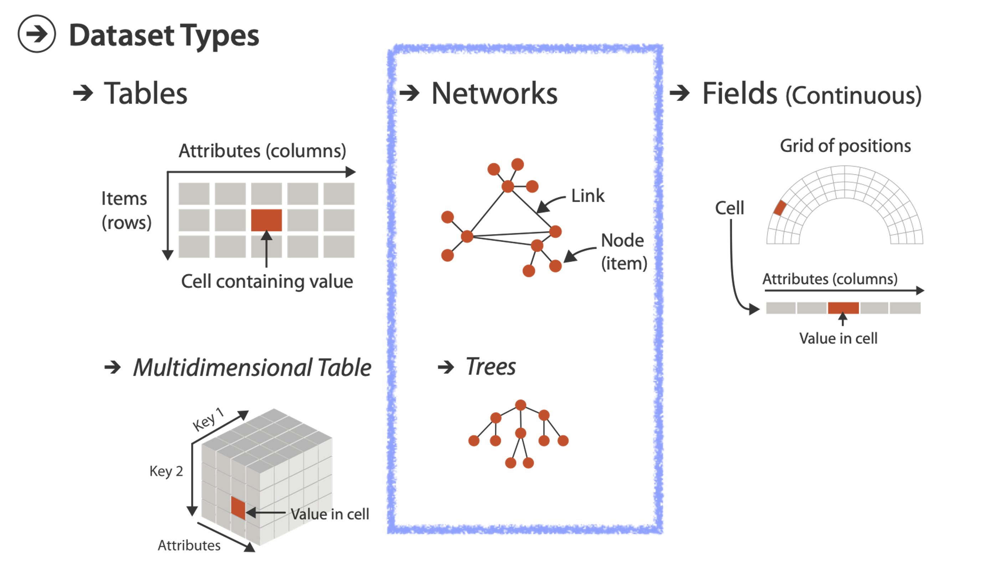
ARRANGE NETWORKS/TREES
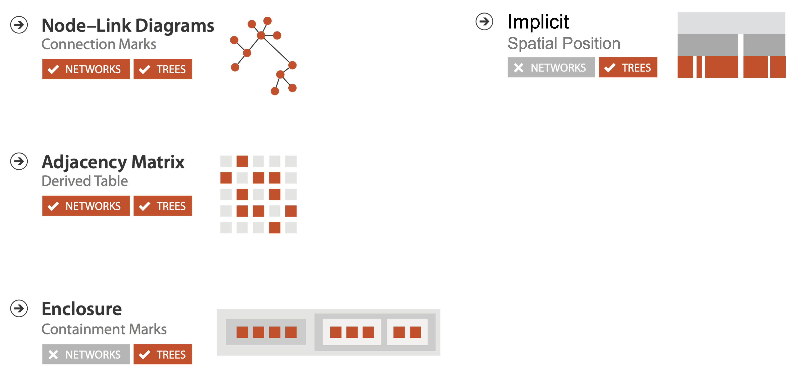
NETWORK TASKS
- Topology based tasks
- find paths
- find (topological) neighbors
- compare centrality / importance measures
- identify clusters / communities
- Attribute based tasks (similar to tabular data)
- find distributions, etc…
- Combination tasks, incorporating both
- example: find friends-of-friends who like cats
- topology: find all adjacent nodes of given node
- attributes: check if has-pet (node attribute) == cat
- example: find friends-of-friends who like cats
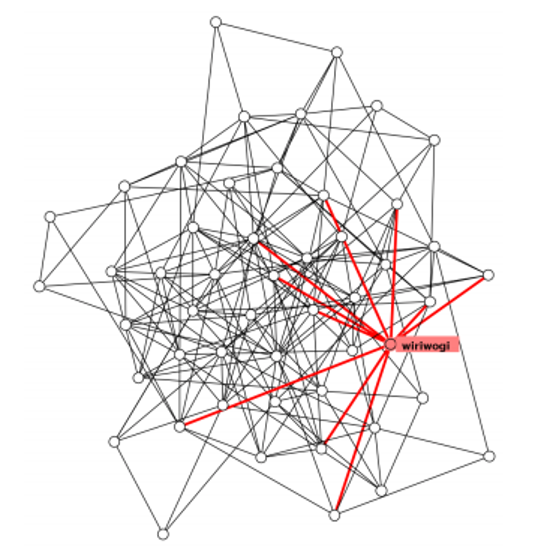
NODE-LINK DIAGRAMS
- Nodes: point marks
- Links: line marks
- straight lines or arcs
- connections between nodes
- Intuitive & familiar
- most common
- many, many variants
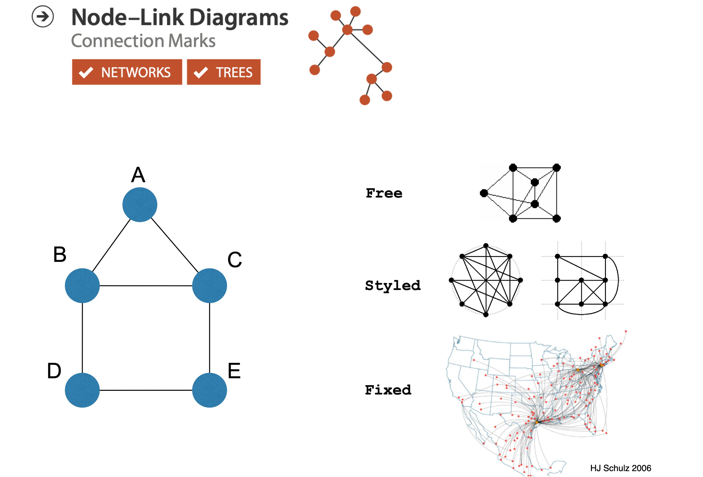
NODE-LINK LAYOUT
- Minimize:
- edge crossings, node overlaps
- distances between topological neighbor nodes
- total drawing area
- edge bends
- Maximize:
- angular distance between different edges
- aspect ratio disparities
- Emphasize symmetry
- similar graph structures should look similar in layout
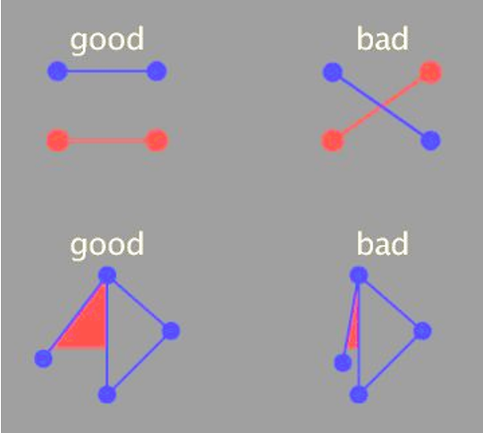
NODE-LINK CHALLENGES
Many criteria directly conflict with each other.
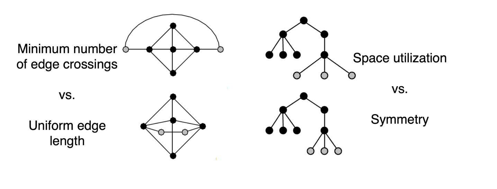
OPTIMIZATION BASED LAYOUTS
- Formulate layout problem as an optimization problem
- Convert criteria into a weighted cost function
- F(layout) = a(crossing counts) + b(drawing space used)+…
- Use known optimization techniques to find layout at minimal cost
- energy-based physics models
- force-directed placement
- spring embedders
FORCE DIRECTED PLACEMENT
- Physics model
- Links = springs pull together
- Nodes = magnets repulse apart
- Algorithm
- Place vertices in random locations
- While not equilibrium, calculate force on vertex as sum of:
- pairwise repulsion of all nodes
- attraction between connected nodes
- Move vertex by c(vertex_force)
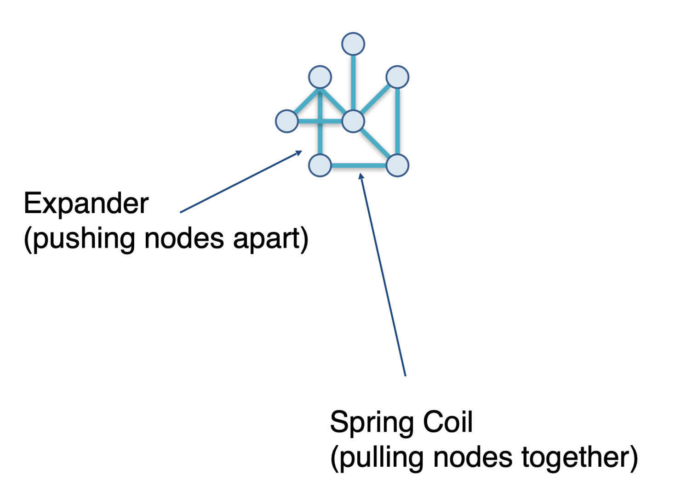
FORCE DIRECTED PROS/CONS
- Strengths
- reasonable layout for small, sparse graphs
- clusters typically visible
- edge length uniformity
- Weaknesses
- nondeterministic
- computationally expensive: O(n^3) for n nodes
- each step is n^2, takes ~n cycles to reach equilibrium
- naive FD doesn’t scale well beyond 1K nodes
- iterative progress: engaging but distracting
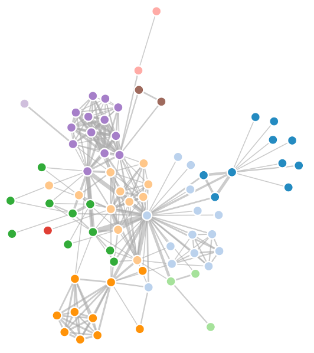
FORCE DIRECTED IDIOM
- Visual Encoding:. link connection marks, node point marks
- Considerations:
- Spatial position: no meaning directly encoded, left free to minimize crossings
- Proximity semantics:
- sometimes meaningful, sometimes an artifact of layout algorithm
- tension with length (long edges more visually salient than short)
- Tasks:
- explore topology; locate paths and/or clusters
- Scalability
- node/edge density E < 4N
FORCE DIRECTED EXAMPLES
CIRCULAR LAYOUTS / ARC DIAGRAMS
- Restricted node-link layouts: lay out nodes around circle or along line
- Data
- original: network
- derived: node ordering attribute (global computation)
- Considerations: node ordering crucial to avoid excessive clutter from edge crossings
- examples: before & after barycentric ordering. The goal of barycentric ordering is to optimize this layout by considering the positions of the nodes based on their connections, thus reducing the overlap and crossings of the arcs that represent the links between nodes.
ADJACENCY MATRIX
Matrix derived from network
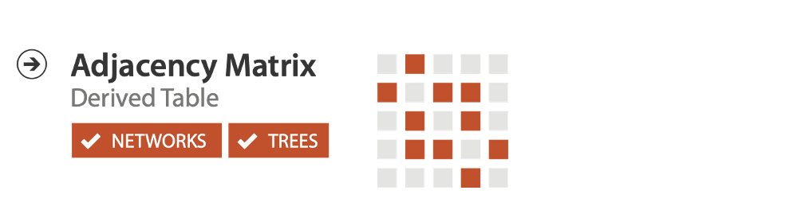
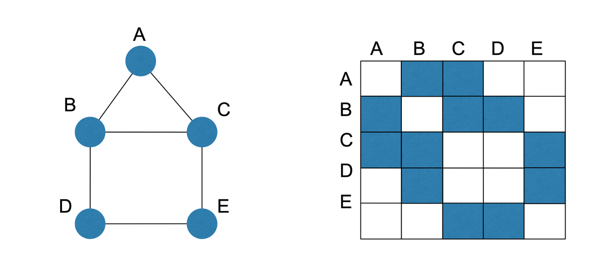
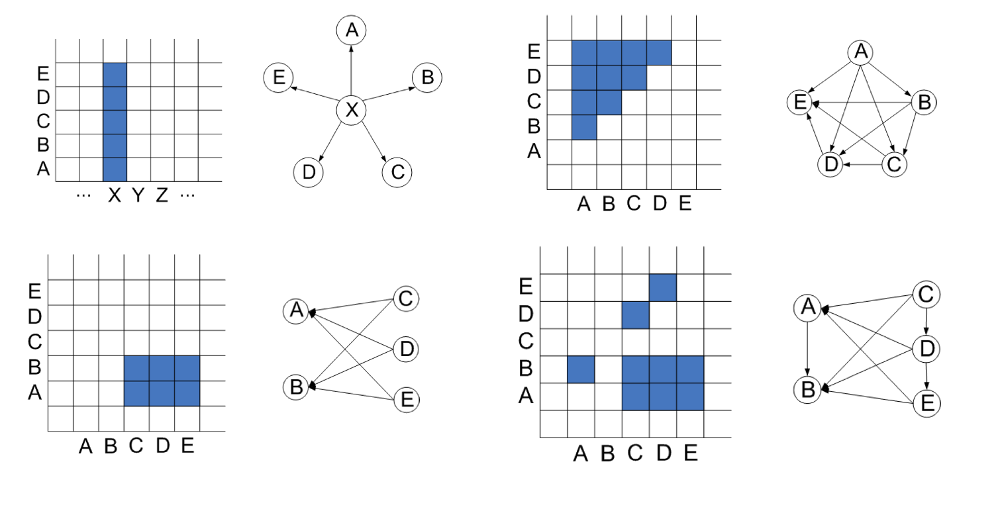
NODE ORDER
ANIMATED VERSION built with D3 by Mike Bostock.
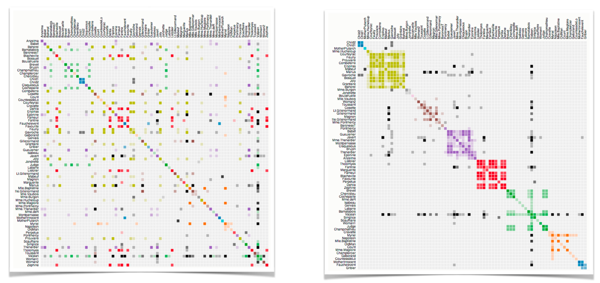
MATRIX PROS/CONS
Good for topology tasks related to neighborhoods. Bad for topology tasks related to paths.
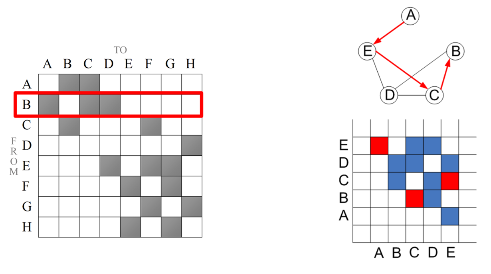
NODE-LINK vs MATRIX
- Node-link diagram strengths
- topology understanding, path tracing
- intuitive, flexible, no training needed
- Adjacency matrix strengths
- focus on edges rather than nodes
- layout straightforward (reordering needed)
- predictability, scalability
- some topology tasks trainable
- Empirical studies:
- node-link best for small networks
- matrix best for large networks if tasks don’t involve path tracing
TREES
NODE-LINK TREES
- Reingold-Tilford
- tidy drawings of trees
- exploit parent/child structure
- allocate space: compact but without overlap
- rectilinear and radial variants

RADIAL NODE-LINK TREE
- Data: tree
- Encoding
- link connection marks
- point node marks
- radial axis orientation
- angular proximity: siblings
- distance from center: depth in tree
- Tasks:
- understanding topology, following paths
- Scalability:
- 1K - 10K nodes (with/without labels)
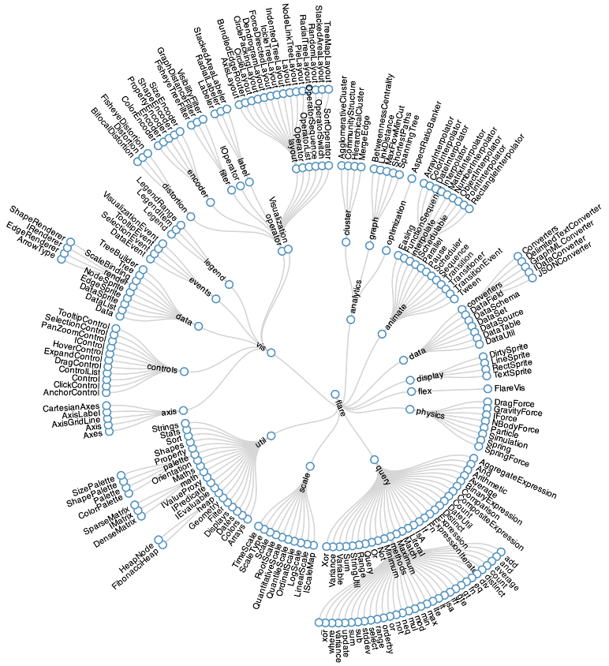 EXAMPLE
CONNECTION AND CONTAINMENT
- Marks as links (vs. nodes)
- common case in network drawing
- 1D case: connection
- ex: all node-link diagrams
- emphasizes topology, path tracing
- networks and trees
- 2D case: containment
- ex: all treemap variants
- emphasizes attribute values at leaves (size coding)
- only trees
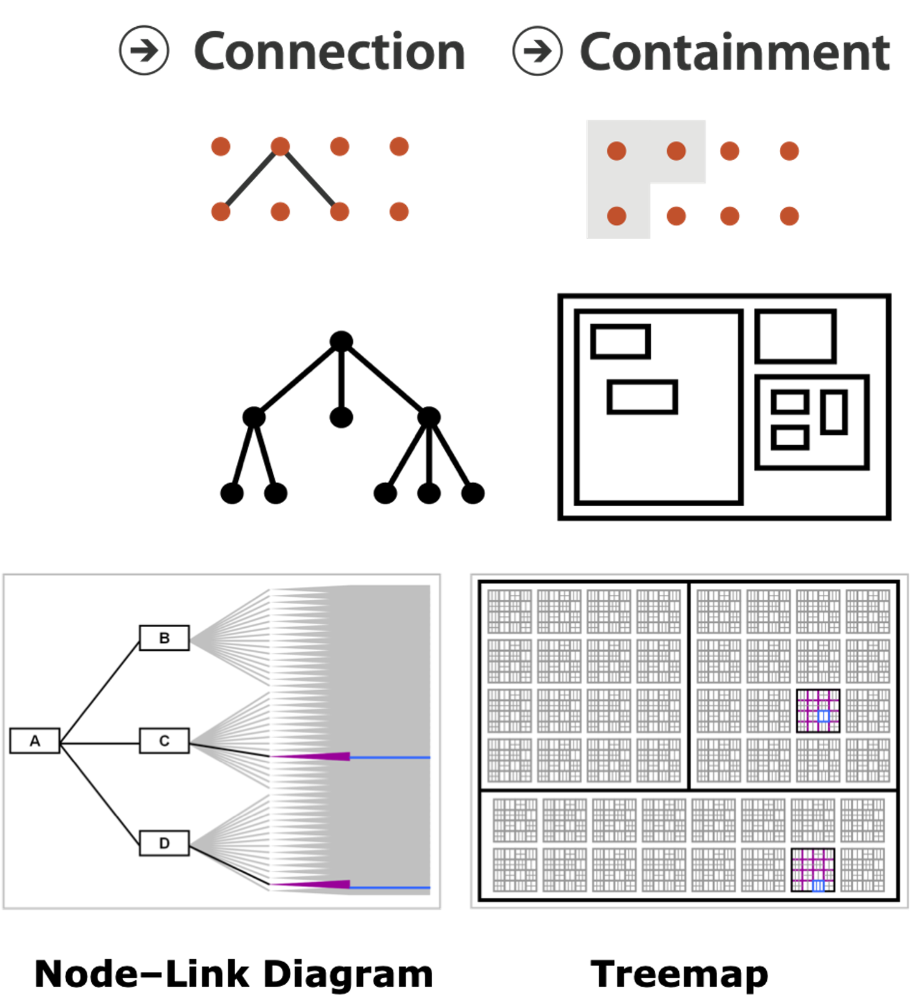
TREEMAP
- Data: tree with 1 quantitative attribute at leaf nodes
- Encoding:
- area containment marks for hierarchical structure
- rectilinear orientation
- size encodes quant attrib
- Tasks:
- query attribute at leaf nodes
- ex: disk space usage within filesystem
- Scalability:
- 1M leaf nodes
IMPLICIT TREE LAYOUTS
An alternative to connection and containment is position. These show parent-child relationships only through relative positions.
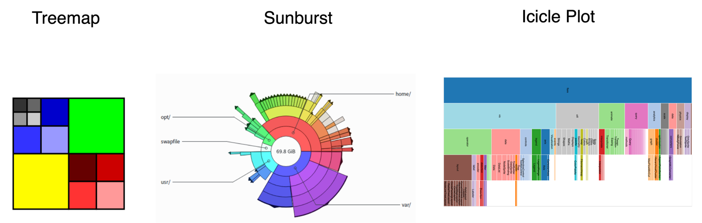
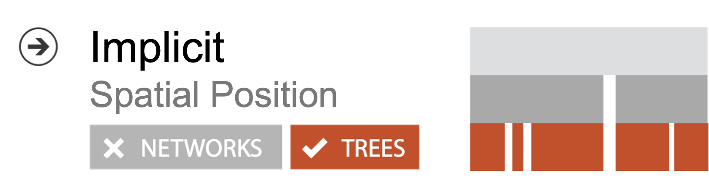
TREE IDIOMS
- Data shown
- link relationships
- tree depth
- sibling order
- Design choices
- connection vs containment link marks
- rectilinear vs radial layout
- spatial position channels
- Considerations
- redundant? arbitrary?
- information density?
- avoid wasting space
- consider where to fit labels!
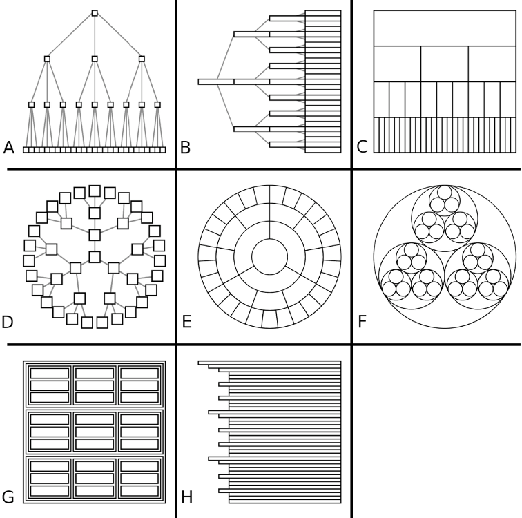